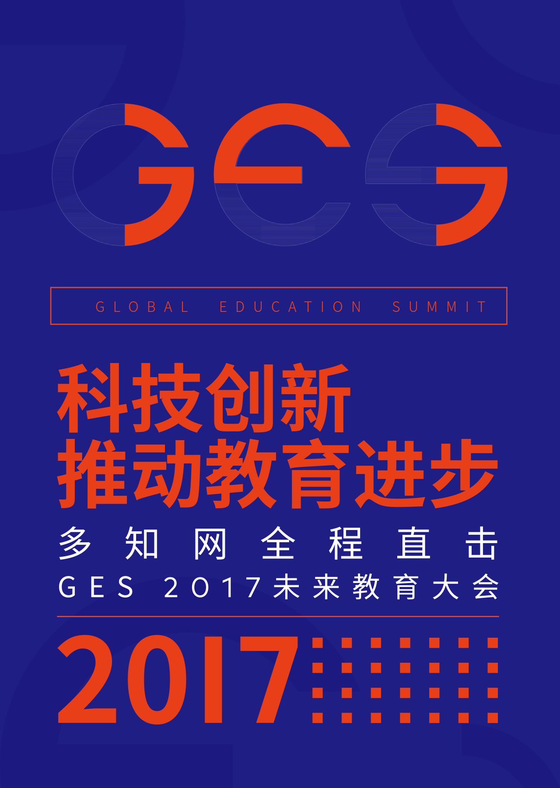

<!DOCTYPE html><html lang="zh-CN"><head><meta charset="UTF-8"><meta name="viewport" content="width=device-width,minimum-scale=1.0,maximum-scale=1.0,user-scalable=no"><meta http-equiv="X-UA-Compatible" content="ie=edge"><meta name="keywords" content="2017 GES未来教育大会"></head></html><title>GES 2017未来教育大会</title><link rel="stylesheet" href="../css/main.css"><body><div class="header"><div class="container"></div></div><div class="banner"><div class="banner-container"></div></div><div class="intro"><div class="intro-container"><div class="intro-text intro-text1">2017年11月28日—11月29日，以“科技创新推动教育进步”为主题的GES 2017未来教育大会（Global Education Summit，以下简称“GES 大会”）将在中国北京正式开幕。届时，300位来自世界各国的教育科技领袖，将就海内外教育、科技的前沿话题和创新成果展开深度探讨。</div><div class="intro-text intro-text2">教育界“双巨头”将会碰撞出怎样的火花？中美教育发展路径孰优孰劣？科技跨界会否对教育赋能？海外明星企业如何看待中国市场？这些问题将在 GES 全球教育大会上揭晓。</div><div class="intro-text intro-text3">多知网推出GES2017专题报道，将在第一时间跟进现场最热观点、以独家视角推送行业观察。</div></div></div><div class="guest"><div class="guest-container"><div class="guest-list-hd"><a class="guest-card-item margin-right margin-bottom margin-right-wap"><div class="img-box"><div class="date-box">11-21</div></div><div class="card-title"><p>对话 科技推动教育</p><p>均衡化发展</p></div><div class="card-person-info"><p>范德彪/</p><p>Minerva大学创世界学生</p><p>作家</p></div></a><a class="guest-card-item margin-right margin-bottom"><div class="img-box"><div class="date-box">11-21</div></div><div class="card-title"><p>对话 科技推动教育</p><p>均衡化发展</p></div><div class="card-person-info"><p>范德彪/</p><p>Minerva大学创世界学生</p><p>作家</p></div></a><a class="guest-card-item margin-bottom margin-right-wap"><div class="img-box"><div class="date-box">11-21</div></div><div class="card-title"><p>对话 科技推动教育</p><p>均衡化发展</p></div><div class="card-person-info"><p>范德彪/</p><p>Minerva大学创世界学生</p><p>作家</p></div></a><a class="guest-card-item margin-right margin-bottom-wap"><div class="img-box"><div class="date-box">11-21</div></div><div class="card-title"><p>对话 科技推动教育</p><p>均衡化发展</p></div><div class="card-person-info"><p>范德彪/</p><p>Minerva大学创世界学生</p><p>作家</p></div></a><a class="guest-card-item margin-right margin-right-wap margin-bottom-wap"><div class="img-box"><div class="date-box">11-21</div></div><div class="card-title"><p>对话 科技推动教育</p><p>均衡化发展</p></div><div class="card-person-info"><p>范德彪/</p><p>Minerva大学创世界学生</p><p>作家</p></div></a><a class="guest-card-item margin-bottom-wap"><div class="img-box"><div class="date-box">11-21</div></div><div class="card-title"><p>对话 科技推动教育</p><p>均衡化发展</p></div><div class="card-person-info"><p>范德彪/</p><p>Minerva大学创世界学生</p><p>作家</p></div></a></div></div></div><div class="interview"><div class="interview-container"><div class="interview-list-hd"><a class="interview-item"><div class="above"></div><div class="below"></div><div class="name">PETER K.BOL</div><div class="touxian">哈佛大学副教务长</div><div class="describe"><p>浸入式学习</p><p>AR&VR／游戏化在教育领域的前景展望</p></div></a><a class="interview-item"><div class="above"></div><div class="below"></div><div class="name">PETER K.BOL</div><div class="touxian">哈佛大学副教务长</div><div class="describe"><p>浸入式学习</p><p>AR&VR／游戏化在教育领域的前景展望</p></div></a><a class="interview-item"><div class="above"></div><div class="below"></div><div class="name">PETER K.BOL</div><div class="touxian">哈佛大学副教务长</div><div class="describe"><p>浸入式学习</p><p>AR&VR／游戏化在教育领域的前景展望</p></div></a></div></div></div><div class="pic-coll"><div class="pic-coll-container"><div class="pic-coll-list-hd"><div class="pic-coll-item long margin-right"></div><div class="pic-coll-item short"></div><div class="pic-coll-item short margin-right"></div><div class="pic-coll-item long"></div><div class="pic-coll-item long margin-right"></div><div class="pic-coll-item short"></div><div class="pic-coll-item short margin-right"></div><div class="pic-coll-item long"></div></div></div></div><div class="bottom-logo"><div class="bottom-logo-container"></div></div></body><script type="text/javascript" src="../js/jquery.js"></script><script type="text/javascript" src="../js/main.js"></script>